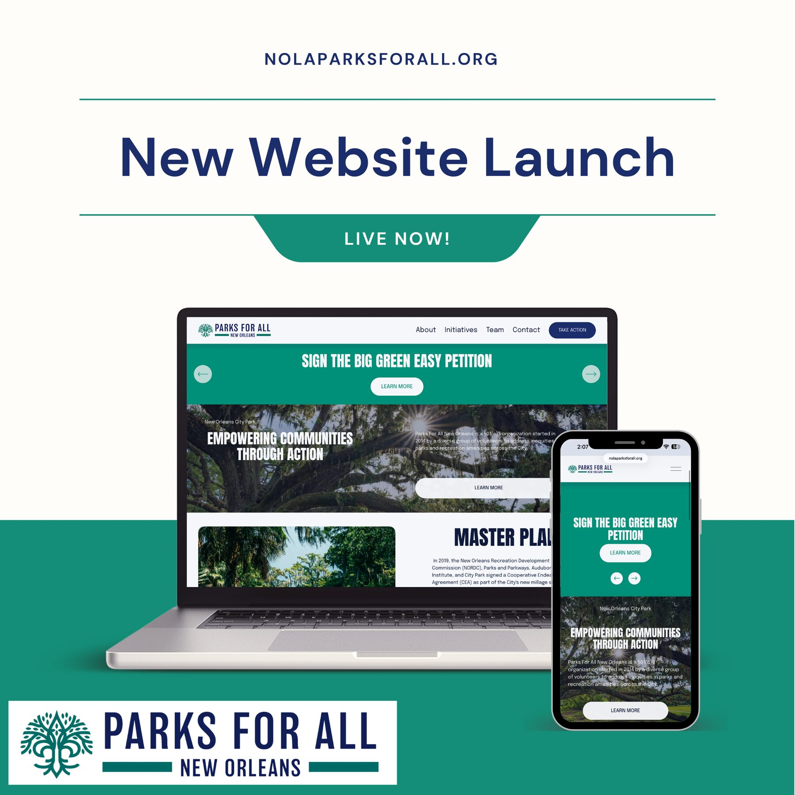
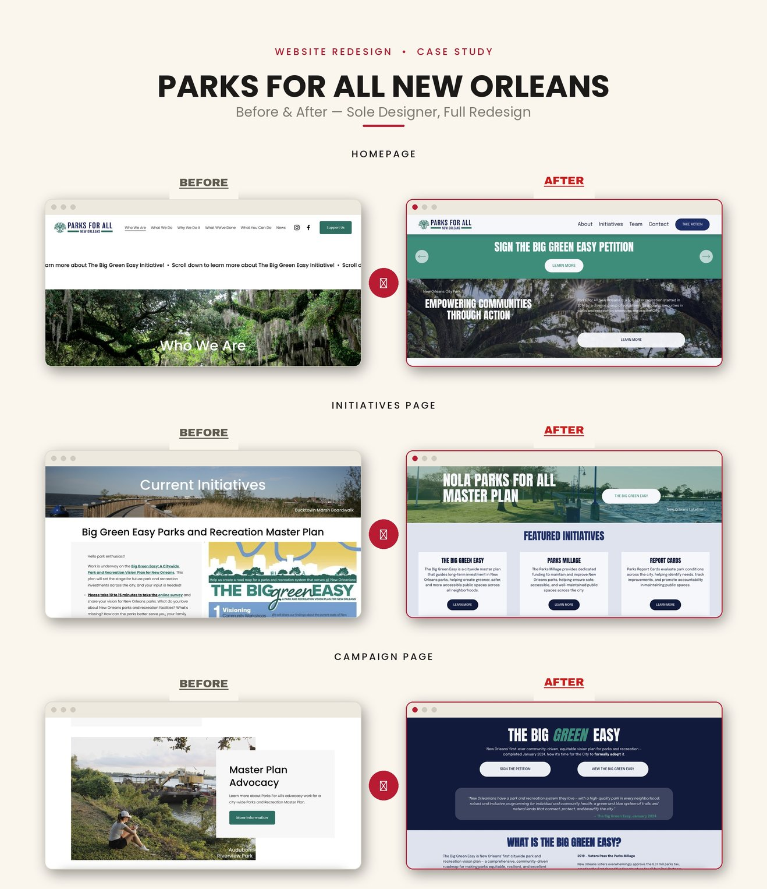
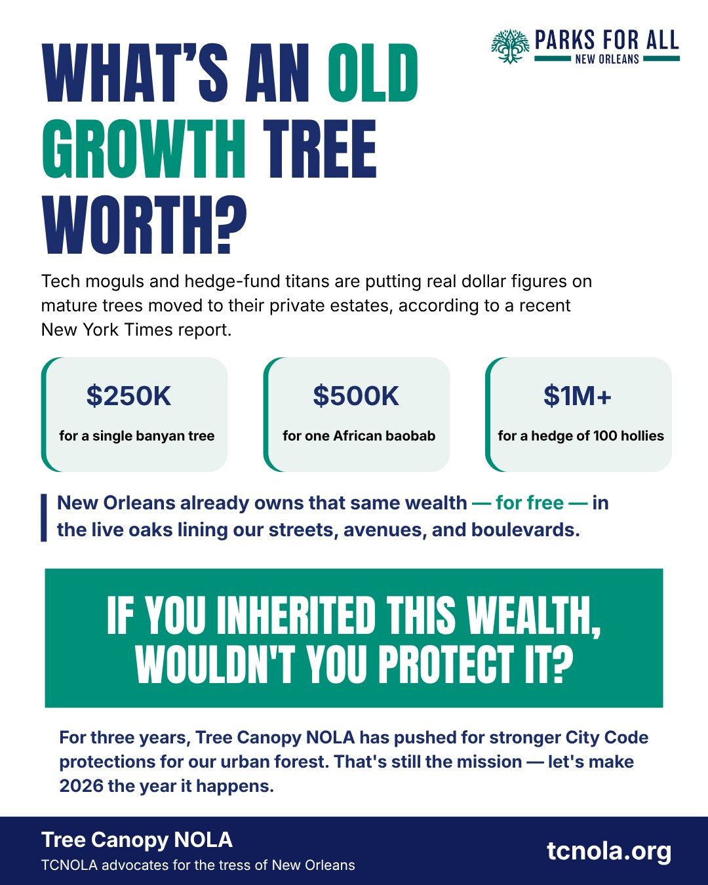
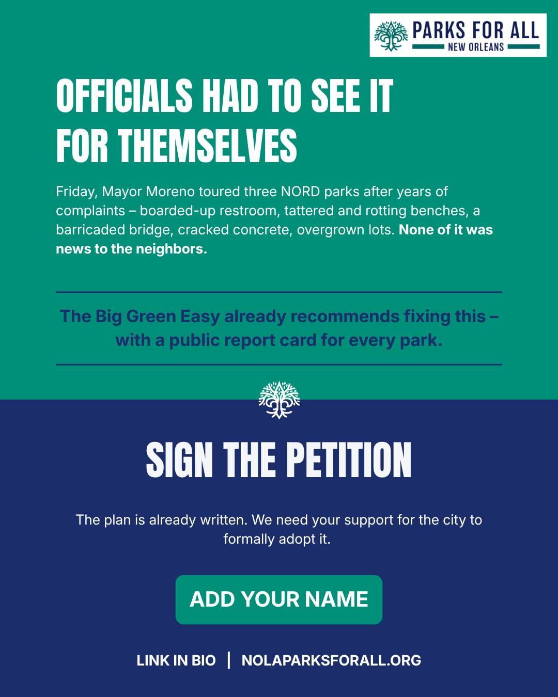

01 — Web & Social Campaign 4 min read
Parks For All
A responsive nonprofit website designed to make New Orleans' park system feel welcoming, browsable, and easy to support.

01 The Problem
NOLA Parks For All works to ensure every neighborhood in New Orleans has access to a safe, well-maintained park — but the org's website and content hadn't been updated since 2018. What visitors found was a dated, text-heavy layout that made it hard to find a park near them, understand what the org actually did, or feel motivated to give.
02 The Approach
I redesigned the homepage and key navigation around large environmental photography, a simplified information architecture, and a warmer palette pulled straight from the parks themselves — greens and warm neutrals instead of institutional blue-and-white. I then built a full before/after audit, page by page, so stakeholders could see exactly what was changing and the reasoning behind each decision before it went to development.
03 The Result
A cleaner, mobile-friendly site structure that puts the mission and the parks front and center, with a clear content hierarchy for programs, park listings, and the donation flow — designed to turn a first-time visitor into a supporter in as few clicks as possible.

04 The Social Campaign
Alongside the site redesign, I designed a two-post Instagram campaign to build public pressure for the city to formally adopt the Big Green Easy master plan — pairing a data-driven hook with a direct call to action.

